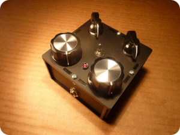
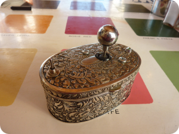
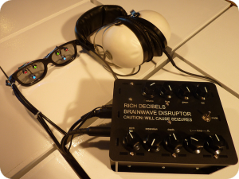
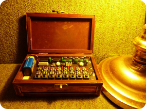
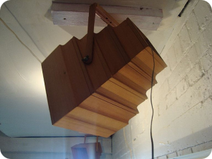
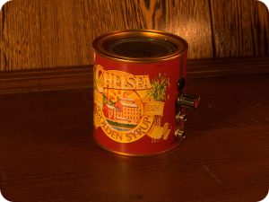
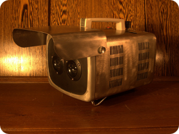
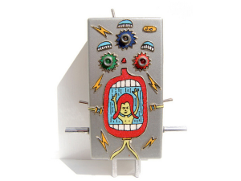

Hi I'm Rich, I make electronic musical instruments and noise making gadgets.
Sinister Tone Generator
The Sinister Tone Generator is a bass drone synth with two pairs of heterodyning oscillators. That means it goes wop-wop-wop.
More...

The Joybox
The Joybox is a joystick-controlled Atari Punk Console in a jewellery box.
It goes screee-doooo...
More...

Howlin' Gaptooth
This battery-powered guitar practice amp is made from laser cut ply. He was designed in collaboration with artist/illustrator Kelly Spencer.
More...

The Brainwave Disruptor
The Brainwave Disruptor is an Arduino-based audio-visual device that 'encourages' your brain to enter states more commonly associated with hallucination or deep meditation.
More...

Kequencer 2.0
It's kind of a keyboard and kind of a sequencer: the Kequencer is supremely good at generating out-of-key chiptune melodies.
More...

Cedar Ceiling Speakers
This is one of a pair of ceiling speakers I made from recycled cedar weather-boards.

Chelsea amp
This is one of the first things I ever built: a battery-powered guitar practice amp in a golden syrup tin.
Based on the Noisy Cricket.

Airstream Amp
The Airstream is a 30W stereo amp built into the shell of a 1960's portable TV.

Synthbot
Synthbot was an exhibition of singing robots created in collaboration with illustrator and rainbow rider FreeLance.
More...

I like to show other humans how to make stuff like this. I run workshop classes where you can learn the basics of electronics and build your very own noise machine. You can find more information and make a booking here.
Wherever possible I like to give away my designs so other people can copy my work. If you're into that sort of thing, you can find full schematics and plans of the devices shown on my blog, along with audio and video samples.
This weird Dutch guy made a couple of films about me and my workshops:
I write for Ponoko about DIY electronics and digital fabrication, and I make websites sometimes too. I can make you a clean little page like this one if you like.
You can get hold of me on +6421-101-6646 or email richdecibels@gmail.com.